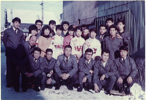
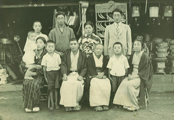

ABOUT WADASYO
会社概要
建築・土木総合資材・仮設資材・住宅機器・金物・作業工具販売商社。
会社情報
- 会社名
- 株式会社 和 田 商
- 事業内容
- 建築・土木総合資材・仮設資材・住宅機器・金物・作業工具販売商社
- 建設業許可
- 許可番号 北海道知事許可(般-19)上 第03390号
- 建設業の種類
- とび・土木工事業 屋根工事業 タイル・レンガ・ブロック工事業 鉄鋼物工事業 板金工事業 ガラス工事業 内装仕上工事業 機械器具設置工事業 建具工事業
- 所在地
- 『本 社』
〒079-8442 旭川市流通団地2条3丁目30番地
TEL(代) 0166-47-4211 FAX 0166-47-4063
「秋月倉庫」
〒079-8403 旭川市秋月3条1丁目5番2号 - 資本金
- 振込額 1,300万円
- 取引銀行
- 北洋銀行 大雪通支店 北海道銀行 豊岡支店
旭川信用金庫 新旭川支店 北星信用金庫 永山支店 - 会社役員
- 相談役 和田 力 代表取締役会長 和田 泰紀
代表取締役社長 和田 亨 常務取締役 後藤 睦 - 従業員数
- （常勤役員含）男11名 女4名 計15名
- 取引先
- 旭川・道北圏 700社
HISTORY
会社沿革


旭川市1条通18丁目に於いて和田新次郎により曲〆和田金物店を開業
㈱曲〆和田金物店と法人改組し、和田新次郎代表取締役社長に就任
和田新次郎逝去により、和田 力 代表取締役社長に就任
ワダ鋼建㈱と社名を変更す
ワダ鋼建㈱建商事業部を開設し独立採算制とす
ワダ鋼建㈱建商事業部を継承し ㈱和田商設立
資本金 350万円 佐々木 豊 代表取締役社長に就任
資本金 350万円 佐々木 豊 代表取締役社長に就任
事務所・店舗及び倉庫を旭川市秋月3条1丁目に移転
資本金を1,300万円に増資する
建設業登録申請許可を受ける
－北海道知事許可 上第03390号－
－北海道知事許可 上第03390号－
和田泰紀 代表取締役社長に就任
本社事務所・店舗を旭川市流通団地2条3丁目30番地へ移転
旭川商工会議所より経営70年表彰
旭川商工会議所より中小企業経営者表彰
旭川商工会議所より経営80年表彰
ホームページ開設
和田泰紀 代表取締役会長に就任
和田 亨 代表取締役社長に就任
和田 亨 代表取締役社長に就任